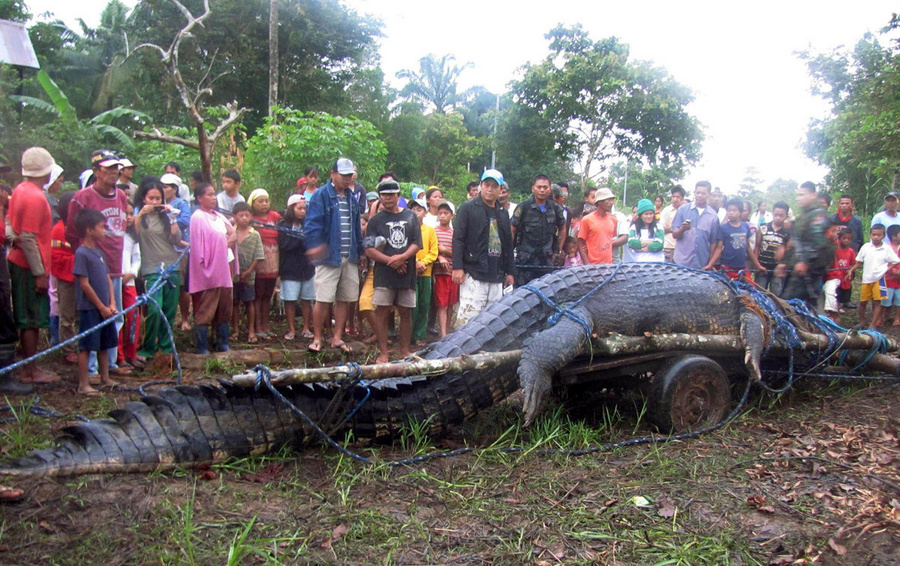
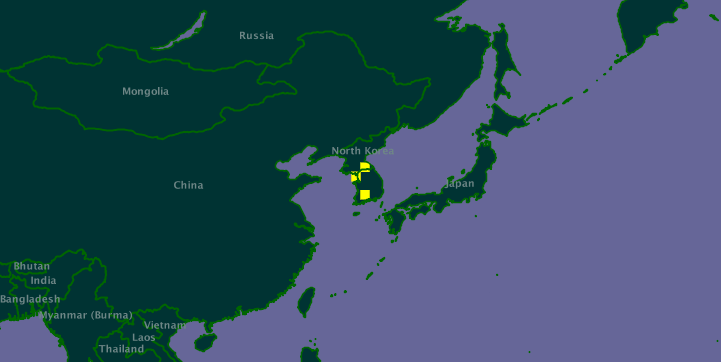
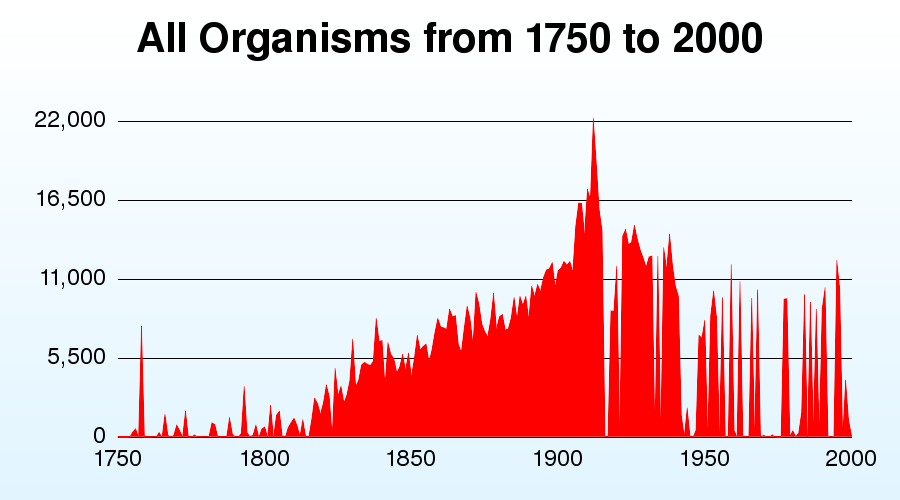
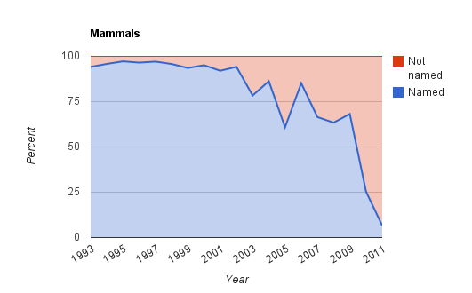
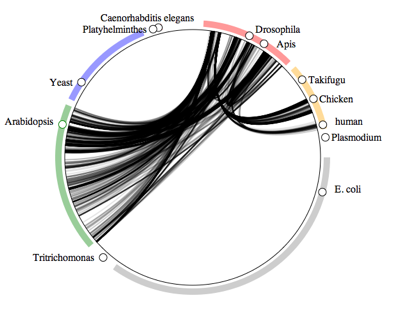
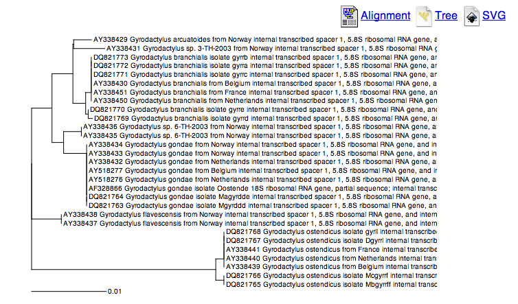

Rod Page (Room 222) My research focusses on biodivrsity informatics and phyloinformatics. For the kinds of things I work on see my blog iPhylo and my list of publications on Mendeley. I have put together a list of project ideas below, but feel free to suggest other ideas.
We may not have discovered all species on the earth, but perhaps we've found all the big ones. If this is the case then perhaps we can leave species discovery to the DNA barcoders as this may be more efficient than training students to identify organisms.
This project will look at the size of newly discovered species over time and test the hypothesis that the mean size of new species declines over time.
The biggest database of species distributions currently available is GBIF. This database is largely based on museum collections. However, people armed with digital cameras and smart phones can make geotagged observations of species that may extend this data. For example, here is the GBIF distribution map for the spider Leucauge magnifica:

(original map at http://data.gbif.org/species/14465163/).
However, there are photos on Flickr of this spider in Taiwan, e.g. http://www.flickr.com/photos/arthur_chapman/3387136868/.
Can we use Flickr to compare museum-based distributions of species with those being discovered by people in the field?
Taxatoy is a tool that "graphs the number of new species discovered every year, from 1750 to 2000". What are the reasons for the trends shown in TaxaToy. Why are there perioids in which very few species seem to have been described? What can this tool tell us about the number of species we can expect to discover in the future?
In a blog post Dark taxa: GenBank in a post-taxonomic world I showed that an increasing number of taxa being added to DNA sequence databases don't have proper scientific names. I referred to these taxa as "dark taxa". It is not clear whether these dark taxa are species that are new to science and hence don't yet have proper names, or whether researchers doing molecular work are being "lazy" and not identifying the organisms they are sequencing (or perhaps there aren't enough taxonomists who can identify them). To distibuigish between these various possibilities we need to example a set of sequences for dark taxa and see whether they represent new species or not.
This project will require analysing data from GenBank using online tools such as BLAST, and searching the literaure to find descriptions of new species.
GenBank is a major resource for any biologist working with DNA sequences, and Wikipedia is perhaps the most important sourc eof information for many people when they first want to learn about a topic. My iPhylo Linkout project seeks to link information on plants and animals in GenBank to the corresponding article in Wikipedia. One reason for doing this is that Wikipedia is perhaps the most visible resource on basic biology, see Google, Wikipedia, and EOL.
This project would compare the taxonomic coverage of GenBank and Wikipedia. Are taxa that biologists consider important (e.g., those with genome projects) also important in Wikipedia (e.g., do they have large Wikipedia articles?). Is there a correlation between when a species is sequenced and when an article is added to Wikipedia on that species? How often do Wikipedia pages use common names instead of scientific names for the page title?
Open Access is a major movement in scientitfic publishing. The idea is that the results of scientific research should be freely available to anyone with access to the Internet. Most scientific papers are published in journals that require a subscript to read (to appreciate the difference, try accessing papers while in a coffee shop and compare this to acessing them while on campus). Much of our knowledge of the world's biota is being published in "closed" journals (i.e., you need to pay to read the articles). For example, of the "top 10" species described in 2010 only two were published in Open Access journals.
This project would take the taxonomic papers for several groups of organisms and determine ow many species descriptions are freely available, and compute the cost of purchasing access to the remaining papers (the "cost of taxonomy"). It will also investigate whether there are temporal, taxonomic, or geographic trends in open access taxonomy (i.e., is it increasing or declining, are some taxonomic groups better served by Open Access publications, and are workers in some countries more likely to publish in Open Access journals than others?).
Phylogenies (evolutionary trees) are central to much of evolutionary biology, but we lack an easy way to find them. If someone asks "what is the phylogeny for my favourite group of animals?" we struggle to come up with an answer, other than "Google it". One reason for this is that few phylogenies end up in phylogenetic databases such as TreeBASE. A further concern is that if the data supporting the trees isn't readly available then it is hard to reproduce the work, lessening its scientific value.
This project will take articles from the journal Molecular Phylogenetics and Evolution and determine to what extent the phylogenies have been databased, and whether the data is available to reproduce the study.
Recently I developed a visualisation called the "symbiome" which is a way to display ecological associations between organisms based on data in GenBank. You can see examples here and here. The idea is that two organisms are connected if they are associated in some way (e.g., host-parasite).
GenBank is not intended to be an ecological database, so it's not clear how representative of an organisms associations these diagrams actually are. To test this we need to assemble host-parasite checklists from the literature and compare them with the "symbiome" diagrams.
Despite the importance of parasites (to a first approximation most animals are probably parasites) we lack a global list of host-parasite associations. Building one from scratch by hand would be tedious in the extreme, but can we automate this? For example, it's often the case that the title of a paper describing a new parasite species includes the name of the host in the title. Could we develop a way to automatically extract this information and build a database of host-parasite associations?
In a blog post I discussed some of the problems when we try and search the Biodivrsity Heritage Library (BHL)using taxonomic names. BHL is an amazing resource, but finding things relies on the OCR text being reasonably accurate (OCR - Optical Character Recognition - is the process whereby a computer converts a scanned image of a page into text). For example, in the paper A new fat little frog (Leptodactylidae: Eleutherodactylus) from lofty Andean grasslands of southern Ecuador (http://biostor.org/reference/229) there are 15 different variations of the frog genus Eleutherodactylus:
This project will explore the frequency of OCR errors in BHL, and whether there are simple ways to improve our ability to find names in that archive.
This project will assemble phylogenies and distributions from the literature and databases such as TreeBASE to test a biogeographic hypothesis. For example, we could test whether organisms in the souther hemisphere show the pattern of relationships you would expect if continental drift had been a key factor in their evolution.
This is a video of a geophylogeny on Google Earth.
Sequence databases are increasingly being populated by sequences from parasites, and many of these include information on their hosts. Given a list of parasites for a given group (e.g., gobies) we can search Genbank for sequences of parasites from those hosts (e.g., AY338429, build evolutionary trees to locate the relatives of those parasites, and from GenBank see what their hosts are. For example, are they on close relatives of the host (in which case the host-parasite association might show evidence of cospeciation), or are they on completely unrelated taxa? This question becomes particularly interesting when the hosts have undergone an ecological shift, such as terrestrial animals becoming marine (do their terrestrial parasites evolve with them, or do the hosts acquire marine parasites?).
For This project you will a taxon of interest, search the literature for lists of parasites, then search for these in GenBank. For parasites with sequences you can build trees using tools such as BLAST sequence and make tree.
